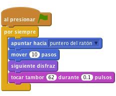
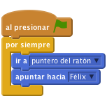
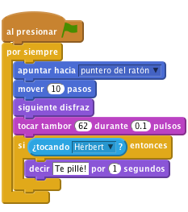
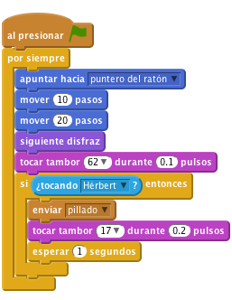
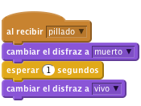
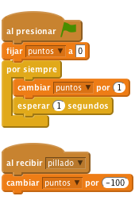

Félix y Hérbert
Nivel 1
Vamos a crear un juego en el que el gato Félix y el ratón Hérbert juegan a pillarse. Tú controlarás a Hérbert con el ratón para evitar que lo pille Félix. Cuanto más tiempo puedas evitarlo, más puntos te dará el juego, pero ten cuidado porque ¡perderás puntos si te pilla!

Crea un proyecto nuevo.
Haz click en escenario y cambia a la pestaña Fondos. Haz click en el botón Elegir un fondo de la biblioteca y selecciona el fondo interiores/hall. Borra el fondo blanco original.
i azul que hay arriba a la izquierda. Cambia el nombre del objeto a Félix.
Crea este programa para Félix:

Haz click en la bandera verde.
¿Sigue Félix al puntero del ratón? ¿Parece que está caminando cuando se mueve? ¿Se mueve a la velocidad correcta?
Ahora, queremos que Félix persiga a Hérbert el ratón en vez de al puntero del ratón.
Elegir un objecto desde la biblioteca y elije animales/mouse1.
Haz click en la bandera verde.
¿Se mueve Hérbert cuando mueves el puntero del ratón? ¿Persigue Félix a Hérbert?
Queremos que Félix sepa cuando ha pillado a Hérbert y nos lo diga.

Haz click en la bandera verde.
¿Dice Félix cuando ha pillado a Hérbert?
En vez de que Félix lo diga, queremos que Hérbert se convierta en un fantasma cuando le pillan.

Crea un nuevo disfraz para Hérbert: Seleccionalo, ve a la pestaña Disfraces y haz click en el botón Elegir un disfraz desde la biblioteca. Selecciona el disfraz fantasía/ghost2-a.
Haz el disfraz más pequeño, seleccionándolo en el Editor y arrastra una esquina de la caja que aparece para cambiar su tamaño.
Cambia el nombre de los disfraces de Hérbert para que el disfraz de ratón se llame ‘vivo‘ y el de fantasma ‘muerto‘.
Crea un nuevo script para que Hérbert se convierta en un fantasma cuando le pillen:

Haz click en la bandera verde.
¿Se convierte Hérbert en un fantasma cuando le pillan?
¿Hace Félix el sonido correcto en el momento adecuado?
¿Se queda Félix quieto el tiempo suficiente para que Hérbert se aleje?
Vamos a añadir un marcador para ver cómo de bien se nos da mantener a Hérbert vivo.
Empezaremos con 0 puntos y ganaremos un punto cada segundo. Si Félix pilla a Hérbert perdemos 100 puntos.
Datos en la pestaña Programas, crea una variable y llámala puntos, asegurándote de que "Para todos los objetos" está seleccionado.
Haz click en la bandera verde.
¿Ganas un punto cada segundo?
¿Pierdes 100 puntos cuando te pillan?
¿Qué pasa si pillas a Hérbert antes de que el marcador llegue a 100? ¿Vuelve el marcador a 0 cuando empiezas el juego de nuevo?
¡Bien hecho! ¡Has terminado! Ahora puedes disfrutar el juego
No olvides que puedes compartir el juego con tu familia y amigos pulsando el botón Compartir en la barra de herramientas